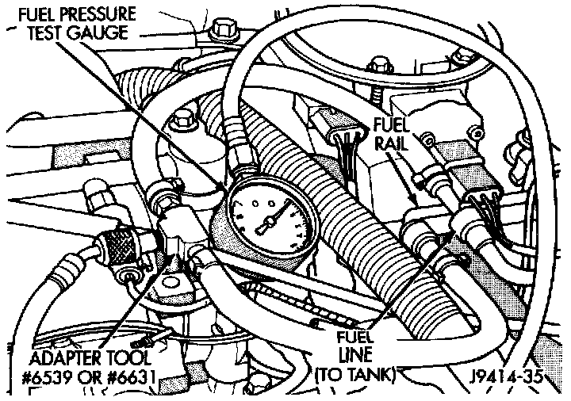
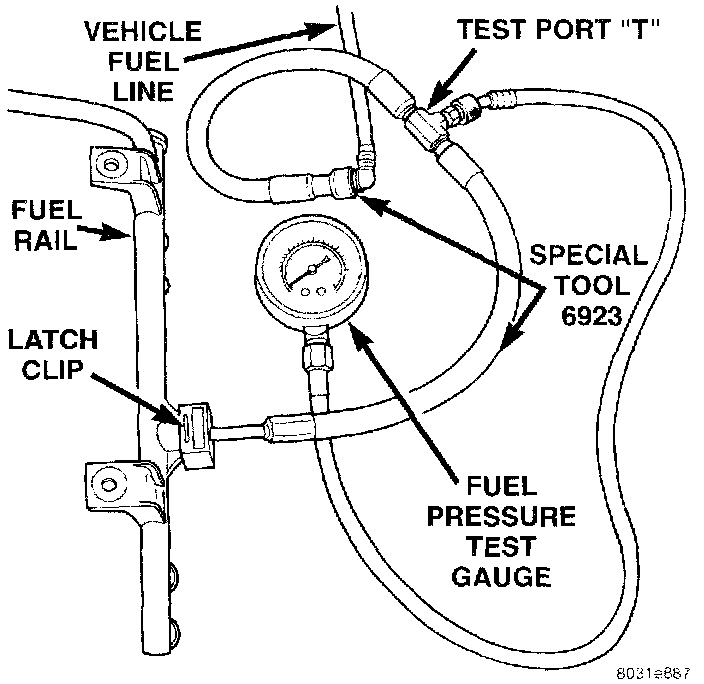

Fuel Pressure Leak Down Test
FUEL PRESSURE LEAK DOWN TESTNOTE: Use this test in conjunction with the Fuel Pump Pressure Test and Fuel Pump Capacity Test.
Check Valve Operation: The electric fuel pump outlet contains a one-way check valve to prevent fuel flow back into the tank and to maintain fuel supply line pressure (engine warm) when pump is not operational. It is also used to keep the fuel supply line full of gasoline when pump is not operational. After the vehicle has cooled down, fuel pressure may drop to 0 psi (cold fluid contracts), but liquid gasoline will remain in fuel supply line between the check valve and fuel injectors. Fuel pressure that has dropped to 0 psi on a cooled down vehicle (engine off) is a normal condition. when the electric fuel pump is activated, fuel pressure should immediately rise to specification.
Abnormally long periods of cranking to restart a hot engine that has been shut down for a short period of time may be caused by:
^ Fuel pressure bleeding past a fuel injector(s).
^ Fuel pressure bleeding past the check valve in the fuel pump module.
1. Disconnect the fuel inlet line at fuel rail. On some engines, air cleaner housing removal may be necessary before fuel line disconnection.
Fig. 10 Connecting Adapter Tool - Typical:

Fig. 11 Connecting Adapter Tool - Typical:

2. Connect the appropriate Fuel Line Pressure Test Adapter Tool (number 6539, 6631, 6541 or 6923) between the disconnected fuel line and fuel rail (Fig. 10) or (Fig. 11).
3. Connect the 0-414 kPa (0-60 psi) fuel pressure test gauge (from Gauge Set 5069) to the test port on the appropriate Adaptor Tool. The fittings on both tools must be in good condition and free from any small leaks before performing the proceeding test.
4. Start engine and bring to normal operating temperature.
5. Observe test gauge. Normal operating pressure should be 339 kPa +/- 34 kPa (49.2 psi +/- 5 psi).
6. Shut engine off.
7. Pressure should not fall below 30 psi for five minutes.
8. If pressure falls below 30 psi, it must determined if a fuel injector, the check valve within the fuel pump module, or a fuel tube/line is leaking.
9. Again, start engine and bring to normal operating temperature.
10. Shut engine off.
11. Testing for fuel injector or fuel rail leakage: Clamp off the rubber hose portion of Adaptor Tool between the fuel rail and the test port "T" on Adapter Tool. If pressure now holds at or above 30 psi, a fuel injector or the fuel rail is leaking.
12. Testing for check valve or fuel tube/line leakage: Clamp off the rubber hose portion of Adaptor Tool between the vehicle fuel line and test port on Adapter Tool. If pressure now holds at or above 30 psi, a leak may be found at a fuel tube/line. If no leaks are found at fuel tubes or lines, the check valve in the electric fuel pump is leaking. The fuel pump is not serviced separately. Replace the fuel pump module assembly.